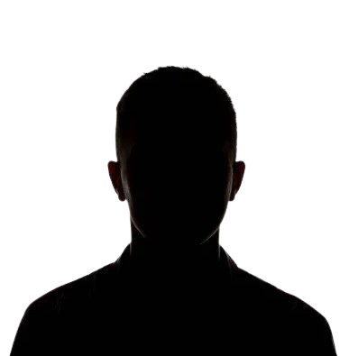

Instructores

Balduvino Montez
6to Dan JKA
Presidente de la Asociación Rio Negrina de Karate
Diego Ariel Montez
4to Dan JKA
Prof. Educacion Fisica y ex seleccion Argentina
¿Por qué entrenar karate?
Practicar karate fortalece la mente, desarrolla una personalidad y genera mayor
seguridad en uno mismo.
Ayuda a fortalecer al cuerpo en general, mejorar tu resistencia, aumentar tu capacidad pulmonar y llevar
tu cuerpo a limites que nunca hubieras imaginado que podias llegar